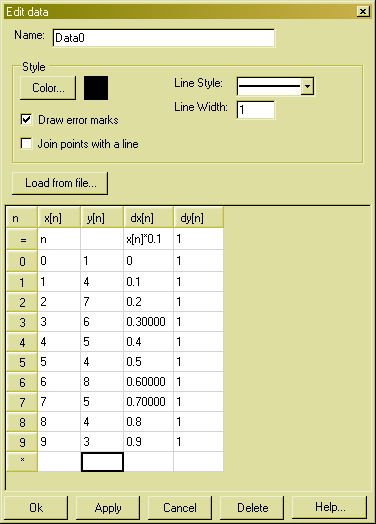

Edit measurement data

In this window you can enter measurement data. In the textbox at the top you can enter a name for the data. This name will appear in the legend and in the Edit menu.
Below you can set the drawing style of the data. If you press the Color... button you can change the color the data is drawn with. You can change the line style and the line width in the appropriate controls. You can also choose if the data points should be drawn with marks that indicate the width of the measurement errors or if there should be drawn a line from one point to the next.
If you press the Load from file... button, a dialogbox is shown, where you can load data from a file.
Below you can edit the data in a table. In the first data-row of the table (denoted with a "=" at the left) you can enter a formula for the corresponding data-column. The formula must be an ordinary C# expression. You can refer to the varaibles n, Length, x[n], y[n], dx[n] and dy[n] in this expression. Alternatively you can enter the columns data into the data fields of the table. If you enter some data in the last row, the table is extended by one row.